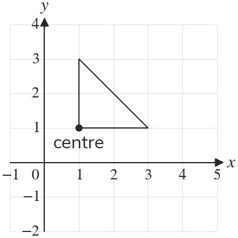
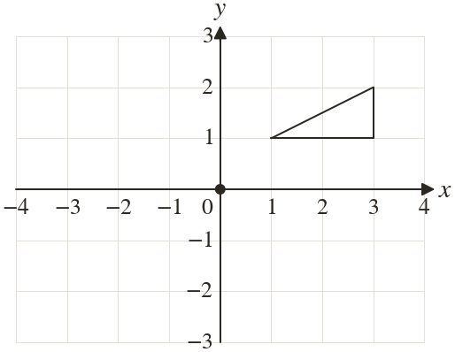

Westonbirt Maths · Transformations
Rotations and Symmetry
Name: ______________________ Date: ____________
1
Rotate the triangle clockwise about

2
Rotate the triangle about

3
Rotate the point through anticlockwise about
4
Rotate the point through clockwise about
5
Ali rotates through clockwise about and gets What is his mistake?
Ext
Rotate the point through clockwise about